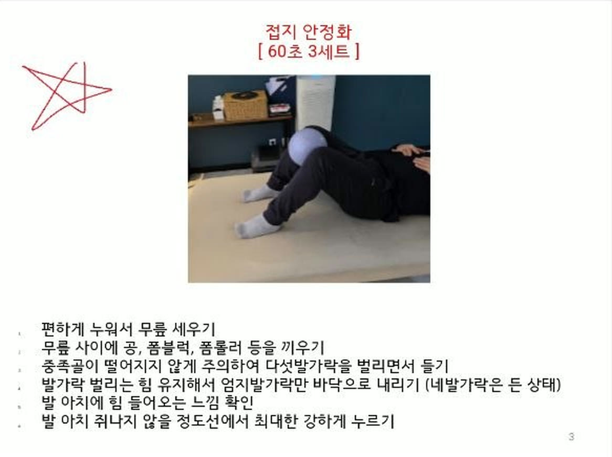

평발 · 족저근막염 발 운동
접지 안정화
60초 유지
3세트
영상을 누르면 소리와 자막이 함께 나옵니다. 개인 경험을 바탕으로 한 자료이며, 통증이 계속되면 진료를 받아 보세요.

운동 자료 3/14쪽 · 아래에서 단계별 영상으로 하나씩 따라 합니다
자료와 영상 출처
운동 자료 3/14쪽 「접지 안정화 [60초 3세트]」의 6단계를 기준으로 했습니다.
단계별 영상은 직접 촬영한 시연 영상(3분 18초)에서 잘랐고, 자막은 촬영 중 설명을 다듬은 것입니다.
자료는 누워서 하는 자세이고, 영상은 앉아서 촬영했습니다. 발 동작은 같습니다.
영상에서는 공 대신 휴지 상자를 무릎 사이에 끼웠습니다.